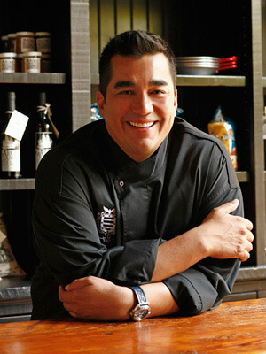
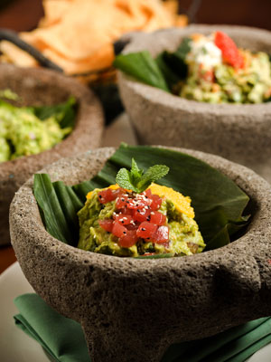

Dining

Words From the Chef:
Philadelphia has the best arrangements and variety of food from our delicious square pizzas to our signature Philly cheese stakes. Each dish is served with a touch of Philly that makes customers keep coming back for more. No matter what your in the mood for, you can find the perfect dish for you and your family on almost every corner here in our great city. With the use of our fresh produce and vast variety of organic cuisine, our assortment of five star restaurants are sure to make your Philadelphia experience delicious and one to remember. And after your dining expereince dont forget to check out all of Phillys beautiful shops.
